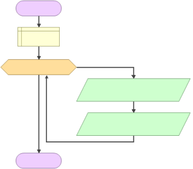
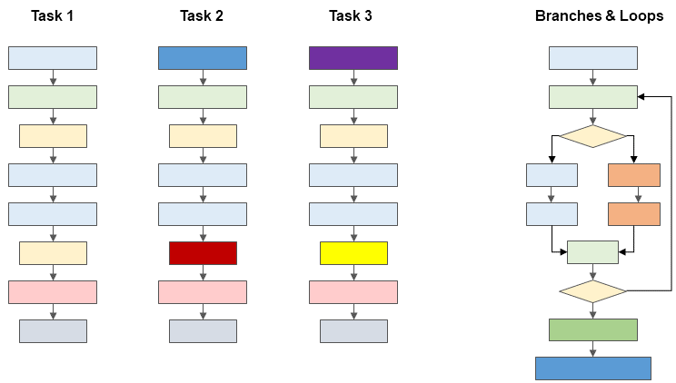
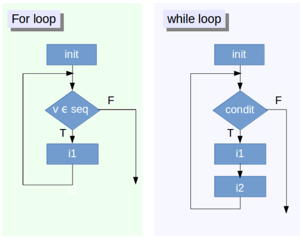

Automation with Branches and Loops



if and else Statementsif and else statements are control
structures that let you control how a code should execute based on a set
of pre-established conditions.
Syntax:
if (condition) {statement} else {other statement}
## [1] "NOT BIG ENOUGH!!"if statement much
be in (parentheses)Composite tests with ‘and’ and ‘or’
You can test for multiple conditions using the
&& (and) and || (or) operators.
You can string together multiple ‘else if’ checks.
## Generate a sample number between 1 and 20
x <- sample(1:20, size=1)
x
## See what its divisible by
if (x %% 2 == 0) {
print("You picked an even number")
} else if (x %% 3 == 0) {
print("You picked a multiple of 3")
} else if (x %% 5 == 0) {
print("You picked a multiple of 5")
} else {
print("You picked a prime")
}## [1] 9
## [1] "You picked a multiple of 3"
Generic syntax of a for loop:
You generally loop a variable like i over a vector of values to control the loop:
Often the loop variable is used as an index:
## [1] "Alabama"
## [1] "Alaska"
## [1] "Arizona"
## [1] "Arkansas"
## [1] "California"Loops can be combined with if-else statements:
## Loop with an if-then statement in the middle
x <- 1:10
for (i in 1:10) {
if(x[i] >= 7) {
print(x[i])
} else {
print("NOT BIG ENOUGH!!")
}
}## [1] "NOT BIG ENOUGH!!"
## [1] "NOT BIG ENOUGH!!"
## [1] "NOT BIG ENOUGH!!"
## [1] "NOT BIG ENOUGH!!"
## [1] "NOT BIG ENOUGH!!"
## [1] "NOT BIG ENOUGH!!"
## [1] 7
## [1] 8
## [1] 9
## [1] 10The generic form of a while loop is:
It’s really important that some_condition will eventually be FALSE, otherwise the loop will run forever!
## Define i
i <- 0
## Go through the loop as long as i is < 0.95
while (i < 0.95) {
## Generate i again as a random number between 0..1
i <- runif(1)
print(round(i,2))
}## [1] 0.4
## [1] 0.67
## [1] 0.27
## [1] 0.85
## [1] 0.02
## [1] 0.35
## [1] 0.28
## [1] 0.18
## [1] 0.14
## [1] 0.55
## [1] 0.8
## [1] 0.4
## [1] 0.7
## [1] 0.02
## [1] 0.04
## [1] 0.94
## [1] 0.55
## [1] 0.5
## [1] 0.32
## [1] 0.29
## [1] 0.66
## [1] 0.99One of the most common uses of a loop is to loop through a data frame.
## Loop thru a data frame
for (i in 1:nrow(Orange)) {
circum_by_age <- Orange[i, "circumference"] / Orange[i, "age"]
if (circum_by_age > 0.2) {
cat("High ratio found in row ", i, "\n")
}
}## High ratio found in row 1
## High ratio found in row 8
## High ratio found in row 15
## High ratio found in row 22
## High ratio found in row 29Loop through the data frame mtcars, and print out the value of the wt column.
[Solution]
## [1] 2.62
## [1] 2.875
## [1] 2.32
## [1] 3.215
## [1] 3.44
## [1] 3.46
## [1] 3.57
## [1] 3.19
## [1] 3.15
## [1] 3.44
## [1] 3.44
## [1] 4.07
## [1] 3.73
## [1] 3.78
## [1] 5.25
## [1] 5.424
## [1] 5.345
## [1] 2.2
## [1] 1.615
## [1] 1.835
## [1] 2.465
## [1] 3.52
## [1] 3.435
## [1] 3.84
## [1] 3.845
## [1] 1.935
## [1] 2.14
## [1] 1.513
## [1] 3.17
## [1] 2.77
## [1] 3.57
## [1] 2.78Loops are commonly used to apply an algorithm to each element or row.
You may want to store or save the results of each pass. A common technique is to create a variable to save the results before you start the loop, and then update or append it within the loop.
## Set up a variable to store the cummulative number of assaults
num_assaults <- 0
## Loop thru the USArrests data frame and increment the num_assaults variable
for (i in 1:nrow(USArrests)) {
num_assaults <- num_assaults + USArrests[i, "Assault"]
}
## Print the final result
print(num_assaults)## [1] 8538Create a character vector of file names:
my_shapefiles <- list.files(path = "./data", pattern = ".shp$")
for (fn in my_shapefiles) {
print(fn)
## Or do something with the file, such as:
## x <- st_read(file.path("./data", fn))
## st_write(x |> st_transform(4326), file.path("./unprojected/", fn))
}## [1] "sf_schools.shp"
## [1] "veg37.shp"
## [1] "yose_boundary.shp"
## [1] "yose_poi.shp"The pattern argument in list.files() takes
a regular expression.
To match files by the end of their name (i.e., extension), add the
$ character at the end (e.g., “.shp$”).
To match files by the beginning of their name, add the ^
character at the beginning (e.g., “^sf”)
list.files() has several optional
arguments you can use to specify the files returned:
recursiveinclude.dirsignore.casefull.namesAnother approach is to create a text file with the file names, and loop through those (see next).
Another common automation technique is to loop through the lines of a text file, which may contain file names, sets of parameters, etc.
## Define a filename to a text file
txt_fn <- "./data/proverbs.txt"
## Open a 'read-only' connection to the text file
con = file(txt_fn, "r")
## Loop through the lines of the file
while (TRUE) {
## Read the next line with readLines (returns a character object)
my_line <- readLines(con, n = 1)
## Check to see if we're at the end
if (length(my_line) == 0) {
## Gotten to the end. Time to exit the loop.
break
}
## Do something
print(my_line)
}
## Close the connection to the text file
close(con)## [1] "If a donkey kicks you and you kick back, you are both donkeys. (Gambia)"
## [1] "An adult squatting sees farther than a child on top of tree. (Gambia)"
## [1] "A fly that has no one to advice it, follows the corpse into the grave. (Gambia)"
## [1] "Giant silk cotton trees grow out of very tiny seeds. (Gambia)"
## [1] "However black a cow is, the milk is always white. (Gambia)"
## [1] "The disobedient fowl obeys in a pot of soup (Benin - Nigeria)."
## [1] "When two elephants fight it is the grass that suffers (Uganda)."
## [1] "The frog does not jump in the daytime without reason (Nigeria)."
## [1] "One goat cannot carry another goat's tail (Nigeria)."
## [1] "The family is like the forest, if you are outside it is dense, if you are inside you see that each tree has its own position (Akan)."
## [1] "It is the woman whose child has been eaten by a witch who best knows the evils of witchcraft (Nigeria)."
## [1] "The hunter does not rub himself in oil and lie by the fire to sleep (Nigeria)."
## [1] "The hunter in pursuit of an elephant does not stop to throw stones at birds (Uganda)."
## [1] "If all seeds that fall were to grow, then no one could follow the path under the trees (Akan)."
## [1] "Even the mightest eagle comes down to the tree tops to rest (Uganda)."
## [1] "A tiger does not have to proclaim its tigri-tude (Wole Soyinka - Nigeria)."
## [1] "Before you ask a man for clothes, look at the clothes that he is wearing (Yoruba, Nigeria)."
## [1] "Until lions have their own historians, tales of the hunt shall always glorify the hunter (Igbo, Nigeria)."
## [1] "Although the snake does not fly it has caught the bird whose home is in the sky (Akan)"
## [1] "One should never rub bottoms with a porcupine (Akan)."
## [1] "Fowls will not spare a cockroach that falls in their mist (Akan)."
## [1] "You do not need a big stick to break a cock's head (Akan)."
## [1] "Marriage is like a groundnut, you have to crack them to see what is inside (Akan)."
## [1] "The rain wets the leopard's spots but does not wash them off (Akan)."CSV files are basically text files that have some structure (i.e., columns, column labels, text delimiters, etc.). They’re generally easier to work with than plain text files, and easy to create. When possible, use a CSV file over a text file.
Many R functions are vectorized, so often you don’t actually need a code loop.
Example: add a random offset to each element of sequence
## Addition is vectorized, so we don't need a loop
data.frame(num=1:5, num_plus_offset=1:5 + rnorm(5, mean=0, sd=0.5))## num num_plus_offset
## 1 1 0.8947256
## 2 2 2.1730814
## 3 3 3.2898822
## 4 4 4.2666908
## 5 5 5.4088643In addition to for and while loops, R has functions like
sapply() and lapply() that will apply a
function to each element of a vector/list.
sapply() and lapply() are generally usually
faster than traditional loops.